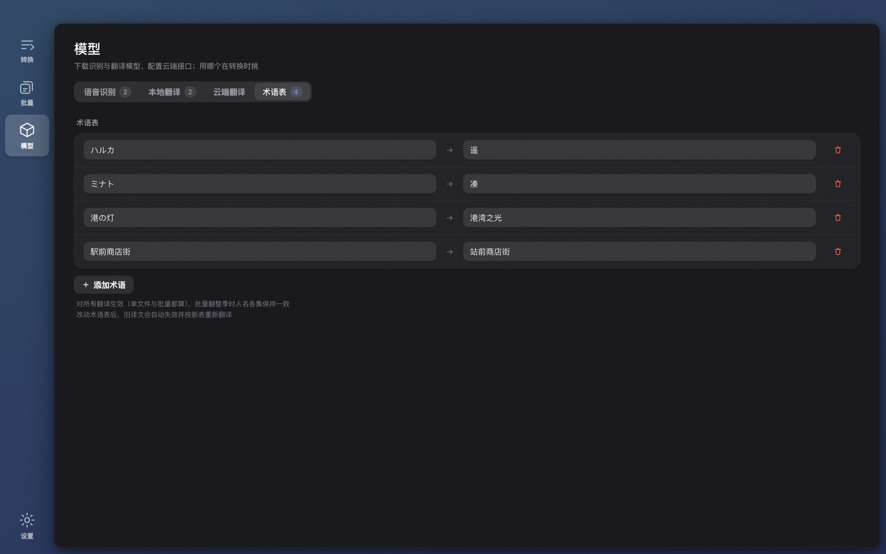

识别、对齐、翻译、编辑——不上传任何文件。本地 Whisper 语音识别，内嵌字幕轨直接抽取，本地大模型或你自己的云端接口翻译，整季批量处理。
Transcribe, align, translate and edit — nothing is uploaded. Local Whisper speech recognition, embedded subtitle track extraction, translation by a local LLM or your own API, whole seasons in one queue.
免费 · 无需注册 · 离线可用 · 32 种界面语言
Free · No account · Works offline · 32 interface languages

编辑器：改文字、调时间，点任意一行直接听这句话——字幕叠加实时反映修改
The editor: fix text, adjust timing, click any line to hear it — the overlay reflects your edits live
拖进一个文件，出来一份可以直接用的字幕。中间的每一步都可以看见、可以改。
Drop in a file, get back subtitles you can actually use. Every step in between is visible and editable.
whisper.cpp 在 Apple Silicon 上用 Metal 加速，自动检测语种。模型在应用内一键下载。
whisper.cpp with Metal acceleration on Apple Silicon, automatic language detection. Models download in one click inside the app.
语音活动检测加响度分析，把识别出的句子贴回真实的说话时刻。参数用六部整片对照官方字幕反复校准。
Voice activity detection plus loudness analysis snap recognized lines back to when they were actually spoken. Tuned against official subtitles of six full-length films.
语音识别、MKV/MP4 内嵌字幕轨、外部字幕文件——18 种格式，编码自动识别，按语言自动选轨。
Speech recognition, embedded MKV/MP4 subtitle tracks, or external subtitle files — 18 formats, encoding auto-detected, track picked by language.
默认用本地 Qwen3，免费离线；也可以接任何 OpenAI 兼容接口。术语表让整季的人名前后一致。
Local Qwen3 by default — free and offline — or any OpenAI-compatible API. A glossary keeps names consistent across a whole season.
每个文件跑完都体检：漏识别的段落、超长条、语速过快、缺译文、译文残留原文，直接告诉你该看哪。
Every file gets a health check: missed passages, overlong lines, unreadable speed, missing or half-done translations — it tells you exactly where to look.
识别结果和译文分层缓存。换个导出格式、换个翻译模型重跑，几秒钟；换了模型或术语表则严格重翻，绝不混用旧译文。
Recognition and translation are cached separately. Re-export or retry in seconds; change the model or glossary and it retranslates strictly — never mixing old output in.

每个文件完成时附带质检结论：覆盖率、漏段、超长条、语速、缺译、残留原文，逐项对照整片基准判断。绿色就放心用，黄色点进去看。
Every finished file carries a quality verdict — coverage, gaps, overlong lines, reading speed, missing or half-done translations — judged against full-film baselines. Green means use it; yellow means take a look.

把一个文件夹拖进来。全部文件用同一套设置，需要的那几个再单独指定字幕轨、音轨或引擎。跑完的每一行都带质检结论。
Drop in a folder. Every file follows the shared settings; override the subtitle track, audio track or engine only where needed. Each finished row carries its quality verdict.

人名、地名、专有名词固定译法，单文件和批量共用。识别模型和翻译模型按你这台机器的内存标注「合适 / 偏慢 / 跑不动」，不用猜。
Pin how names, places and terms are translated — shared by single files and batches. Recognition and translation models are labeled fit / slow / won't run for the memory in your machine, so there's nothing to guess.
Wave Subs 没有账号、没有统计、没有服务器。它就是一个在你电脑上跑的程序。
Wave Subs has no account, no analytics, no server. It is a program that runs on your computer.
版本 1.0.0。免费使用。ffmpeg 与 whisper.cpp 已随包附带，无需另装任何东西。
Version 1.0.0. Free. ffmpeg and whisper.cpp are bundled — nothing else to install.
首次使用会引导下载识别模型（large-v3 约 3 GB，也可选更小的）。开源组件许可见 THIRD-PARTY-LICENSES。
On first launch you'll be guided to download a recognition model (large-v3 is about 3 GB; smaller ones are available). Open-source component licenses: THIRD-PARTY-LICENSES.
能。模型下载好之后，识别、精修、本地翻译、编辑、导出全部不需要联网。只有你主动配置的云端翻译需要网络。
Yes. Once models are downloaded, recognition, refinement, local translation, editing and export need no network. Only cloud translation you configure yourself does.
目前没有。本地识别依赖 Apple Silicon 的 Metal 加速，Intel 机器上会慢到不实用。
Not currently. Local recognition relies on Metal acceleration on Apple Silicon; on Intel it would be too slow to be useful.
M 系列芯片上用 Large v3 Turbo 大约 3～6 分钟，加上本地翻译再多几分钟。整季批量处理可以挂着跑。
Roughly 3–6 minutes with Large v3 Turbo on an M-series chip, plus a few more for local translation. Batch a whole season and let it run.
不用。Wave Subs 会自动发现内嵌的文本字幕轨并优先使用（按语言自动选轨），直接进入翻译，比识别快得多也准得多。图形字幕（PGS/VobSub）除外。
No. Wave Subs detects embedded text subtitle tracks and prefers them (picked by language), skipping straight to translation — much faster and more accurate. Image-based subtitles (PGS/VobSub) are the exception.
Windows 版尚未购买代码签名证书，SmartScreen 会对新程序提示。点「更多信息 → 仍要运行」即可；安装包的校验值发布在 GitHub Releases 页面。
The Windows build isn't code-signed yet, so SmartScreen warns about new programs. Click "More info → Run anyway"; checksums are published on the GitHub Releases page.
取决于你选的服务商，费用由服务商向你收取，Wave Subs 不经手。默认的本地 Qwen3 翻译完全免费。
That depends on the provider you choose; they bill you directly and Wave Subs takes nothing. The default local Qwen3 translation is entirely free.